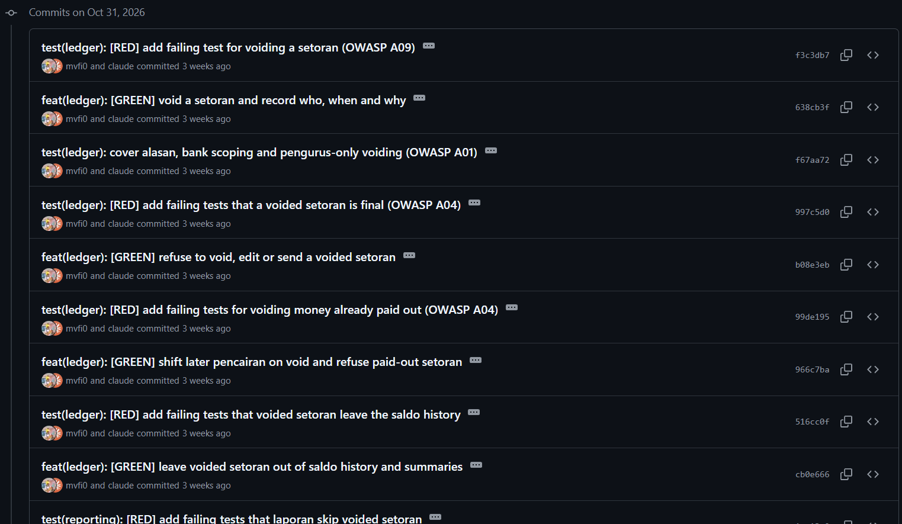

Software Methodology: TDD¶
Competency level: 3
- Three features of PILAH built test-first, each on both the backend (pilah-be) and the app (pilah-mobile, phone and web):
- scheduled prices (PIL-304);
- role change before onboarding (PIL-451);
- void a setoran (PIL-428).
- 47 red → green cycles across six merge requests: 25 on the backend, 22 on the app. Every phase commit carries its
[RED],[GREEN]or[REFACTOR]tag. - Changed lines covered at 100% in all six MRs.
- Each behaviour tested with positive, negative and corner cases.
- Part B TDD at 3 or above for seven weeks running.
- 12 defects caught by a failing test before merge, each guarded by that test from then on.
Contents:
- What TDD means
- The three features
- TDD commit flow, with evidence of the order
- Coverage
- Part B record
- Positive, negative and corner cases
- Benefits of TDD, from development data
- Tools and methods
- Test isolation: stubs, mocks and dummy data
- The F.I.R.S.T. principle
- Mapping to the rubric
- Appendix: test code
1. What TDD means¶
Test-Driven Development means writing the test before the code it tests. The test describes the behaviour I want, and the code is written only to make that test pass. Each behaviour goes through a short cycle:
- Red: write a test for one behaviour and run it. It fails, because the behaviour doesn't exist yet.
- Green: write the least code that makes the test pass.
- Refactor: clean up the code while every test stays green.
The cycle repeats, one behaviour at a time, until the feature is done. The tests then stay in the project as a safety net: any later change that breaks a behaviour turns its test red straight away.
In PILAH each step is its own commit, so the order can be checked in the history:
test(...): [RED] …adds only the failing test;feat(...): [GREEN] …orfix(...): [GREEN] …adds the code that makes it pass;refactor(...): [REFACTOR] …comes only after green.
A test that already passes when written is committed as a coverage test (test(...): cover …) with no phase tag, so it is never presented as a red.
2. The three features¶
| # | Feature | What it does | Backend MR | App MR | Built |
|---|---|---|---|---|---|
| 1 | Scheduled prices (PIL-304) | A jenis sampah's price becomes a history of versions. A change applies now or from a future date, and each setoran is priced at the version in effect on its date | pilah-be #79 | pilah-mobile #62 | 7–12 Oct |
| 2 | Role change before onboarding (PIL-451) | An account that tapped the wrong role at sign-up can change it, until onboarding has started (a completed profile, a bank sampah, or a linked membership). Each change is logged | pilah-be #137 | pilah-mobile #174 | 26 Oct – 17 Nov, over three review rounds |
| 3 | Void a setoran (PIL-428) | A pengurus cancels a recorded setoran with a reason. The row stays, marked "dibatalkan", and its total leaves the saldo, the history and every report | pilah-be #145 | pilah-mobile #193 | 31 Oct – 2 Nov |
3. TDD commit flow, with evidence of the order¶
Each table lists the cycles in the order they were committed. The numbers in brackets are lines added and removed by that commit, from git show --shortstat. Every red commit changes only test files.
3.1 Scheduled prices, backend (pilah-be #79)¶
| # | Behaviour | Red | Green |
|---|---|---|---|
| 1 | The price in effect at a given time is the latest version that has started | 2b0c4ab (+42) |
a41b5d5 (+99 −2) |
| 2 | A setoran prices its items from the version in effect, ignoring scheduled ones | e6bf183 (+74) |
d111495 (+8 −3) |
| 3 | A new jenis records its price as a first version, with its author | f0fbe9d (+61) |
c729f7a (+46 −5) |
| 4 | POST /jenis-sampah/{id}/harga changes the price now |
0a42f99 (+17) |
df1db9f (+40 −6) |
| 5 | A future berlaku_mulai schedules the price, and the current one stays |
68a805e (+22) |
c53f1a7 (+39 −9) |
| 6 | A backdated, far-future or offsetless berlaku_mulai is rejected |
1c829d6 (+19) |
78f1945 (+33 −1) |
| 7 | A price changed through PUT (older app builds) becomes a version |
f323911 (+30) |
ead26b9 (+17) |
| 8 | The database rejects a price of 0 or below | 8593164 (+8) |
915b3d1 (+12 −1) |
| 9 | The migration backfills every price and drops the old column; the reverse migration restores it | caaceab (+126) |
ad352fb (+172 −57) |
| 10 | The jenis list's query count stays constant | c2a7c71 (+28) |
6c0ba69 (+32 −12) |
| 11 | The list's status and kategori filters accept only known values |
94267c8 (+18) |
cef01bb (+32 −11) |
| 12 | Review finding: reseeding keeps a historical setoran at the price of its own date | 857735b (+21) |
f67a84f (+17 −10) |
Refactors after green:
95a62f3breaks ties on the newest row explicitly;ee9668dmoves price selection out of the sharedkalkulasimodule;1e7da30looks the price up at the transaksi'stanggal;fe5db58splits an assertion SonarCloud flagged.
3.2 Scheduled prices, app (pilah-mobile #62)¶
| # | Behaviour | Red | Green |
|---|---|---|---|
| 1 | The app reads when the current price started and when the next one starts | bc5301e (+40) |
6884877 (+40) |
| 2 | Local times are sent with their UTC offset | dce80aa (+22) |
2a81157 (+15) |
| 3 | A price change is POSTed, and the price is no longer sent with PUT |
c7fa0b5 (+92) |
f62ca9b (+51 −1) |
| 4 | The harga cubit changes a price through UbahHargaUseCase |
ea35ccb (+77) |
7729d3d (+39) |
| 5 | Editing a jenis shows the BR-03 warning and the current and scheduled price | 3a9f7e4 (+90) |
b67d38d (+90 −2) |
| 6 | A price is saved now, or from a chosen date | f97b492 (+64) |
bb80f22 (+74 −4) |
| 7 | The price list card shows an upcoming price change | 1c28897 (+55) |
392ef5d (+17) |
| 8 | Review finding: when only the new price fails after the other fields saved, the sheet says so and stays open | 5a80375 (+28) |
f1ea8d9 (+15) |
| 9 | Review finding: an older list reload that answers late can't overwrite a newer one | ece524b (+38) |
bd21f70 (+4) |
Coverage test: 52ec8d0 (+73 −2) covers the lines the first coverage run showed as missed (92% → 100%): the use case, a failed request, HargaTerjadwal equality, and two branches of the sheet.
3.3 Role change, backend (pilah-be #137)¶
| # | Behaviour | Red | Green |
|---|---|---|---|
| 1 | An unfinished account switches its role and gets a new session | a23ba21 (+27) |
13c1a44 (+25) |
| 2 | The role stays (409) once onboarding has started: a completed profile, a bank sampah (pending included), or a linked membership | e227286 (+46 −1) |
52f087f (+24 −5) |
| 3 | Each role change is recorded in user_role_change_log; a refusal or a re-pick of the same role writes nothing |
62e79e1 (+23) |
2c591c5 (+104 −15) |
| 4 | Review finding: a role change during a bank registration, a membership application or an invite acceptance waits for it, then is refused | f4b663d (+147) |
df45397 (+34 −14) |
| 5 | Review finding: a Google login takes the same account lock before it claims a membership | c428c32 (+85 −1) |
d19cb8d (+17 −7) |
| 6 | Review finding: completing the profile next to a role change takes the lock and answers with the current role | 9424d9f (+22) and 870224d (+18) |
51a631e (+5) |
Cycle 6 has two red commits, one for the stale answer and one for the race, and a single green commit makes both pass.
- Coverage tests, each passed when written and was then proven with a mutation check:
cafba5a(+20): who may change a role, and to what;bf3a529(+20): a bank registered after the account was loaded (Appendix A);d83b0c1(+27): switching to every registration role, after a review finding.
- Refactors after green:
One untagged one-line commit, 8bf93cf, exports the new log model from the models registry.
3.4 Role change, app (pilah-mobile #174)¶
| # | Behaviour | Red | Green |
|---|---|---|---|
| 1 | The data layer PATCHes onboarding/role, stores the new session, and keeps the old one on a 409 |
8ef4514 (+82) |
f8214e3 (+52) |
| 2 | The notifier switches to the new session, or returns the server's reason | 79f95a9 (+59) |
778cad5 (+19) |
| 3 | The role page serves a signed-in account: its role preselected, the change made, the draft dropped, a refusal shown | a0b8fd0 (+143) |
9517dbd (+57 −12) |
| 4 | Lengkapi Profil names the role with a way to change it, hidden once a bank sampah exists or in invite mode | 9e83120 (+112) |
a1b49bd (+50) |
| 5 | Review finding: re-picking the same role keeps the typed draft, and a real change clears the form | 26dce38 (+46) |
3d0a81b (+33 −1) |
| 6 | Review finding: on web, the role page has a Kembali back to Lengkapi Profil | 42d2020 (+20) |
ef55977 (+20 −5) |
- Coverage tests:
- Refactors after green:
Two untagged review fixes change only style tokens, 00fec19 and 6eef5a4. They change no behaviour, so they have no test.
3.5 Void a setoran, backend (pilah-be #145)¶
| # | Behaviour | Red | Green |
|---|---|---|---|
| 1 | A void keeps the row, takes its total out of the saldo, and records who, when and why | f3c3db7 (+69) |
638cb3f (+126 −3) |
| 2 | A voided setoran is final: voiding it again, editing it or resending its WhatsApp receipt gets 409 | 997c5d0 (+34) |
b08e3eb (+27 −6) |
| 3 | Money already paid out can't be voided, and later pencairan snapshots shift | 99de195 (+50 −1) |
966c7ba (+9 −2) |
| 4 | A voided setoran leaves the saldo history, the riwayat summary and the pencairan edit replay | 516cc0f (+51) |
cb0e666 (+33 −18) |
| 5 | Reports leave it out: the Excel export, dashboard stats, trends, categories and the nasabah statement | 1aa13a0 (+124) |
05b3bf1 (+14 −5) |
| 6 | Nasabah views show it as "dibatalkan", and the pengurus ringkasan stops counting it | 93fd052 (+87) |
773d667 (+18 −10) |
| 7 | The database refuses a half-recorded void | 31b3ee4 (+12) |
2814ae6 (+43 −2) |
-
Coverage test:
f67aa72(+41) covers three guards:- the alasan is required;
- another bank's setoran gets 404;
- a nasabah gets 403.
The serializer, the bank-scoped queryset and the permission class already enforced these, so the tests passed when written. The commit says so. - Refactor after green:
ae850a0(11 files, +48 −31) routes every counted-setoran query throughTransaksi.objects.tercatat().
The order as GitHub shows it. The screenshot is the start of the PR's commit list on 31 Oct, with the same hashes as the table:
- each
[RED]commit comes directly before the[GREEN]commit that makes it pass; - the coverage test
f67aa72sits between cycles 1 and 2, without a phase tag, because it passed when written.

3.6 Void a setoran, app (pilah-mobile #193)¶
| # | Behaviour | Red | Green |
|---|---|---|---|
| 1 | A voided setoran is marked in the riwayat feed (grey amount, "Dibatalkan") | fe6cb9f (+44) |
ca482d2 (+17 −1) |
| 2 | The notifier voids through BatalkanTransaksiUseCase and returns the detail or the server's reason |
d511208 (+68) |
5b76c4f (+96) |
| 3 | Hapus from the phone's selection header, with a required alasan | 0e102d4 (+206) |
cd2cad4 (+169 −27) |
| 4 | Hapus in the web Aksi column, and none on a voided row | 65ed307 (+47) |
3db0fa9 (+58 −20) |
| 5 | The detail shows who voided it, when and why | 0ffc9d3 (+34) |
24be713 (+56 −9) |
| 6 | Found by E2E: the Hapus dialog stays narrow on desktop, and a voided detail shows no saldo | df1fc4c (+12) |
4d16698 (+66 −55) |
| 7 | After the staging merge: the new inline detail shows the pembatalan | 5af4e5d (+68) |
ef7a0b9 (+43 −1) |
Refactor after green: ca2ec7a (+18 −17) replaces three nested ternaries with a guard clause, after SonarCloud rule S3358.
3.7 Totals¶
| Feature | Cycles (backend + app) | Lines added by red commits | Lines added by green commits |
|---|---|---|---|
| Scheduled prices | 12 + 9 = 21 | 466 + 506 = 972 | 547 + 345 = 892 |
| Role change | 6 + 6 = 12 | 368 + 462 = 830 | 209 + 231 = 440 |
| Void a setoran | 7 + 7 = 14 | 427 + 479 = 906 | 270 + 505 = 775 |
| Total | 25 + 22 = 47 | 2,708 | 2,107 |
About 1.29 lines of test were written for every line of production code, and each one before the code it tests. Refactor and coverage commits are not counted here.
4. Coverage¶
Coverage is measured on the lines each merge request changes, in two ways:
- SonarCloud's new-code coverage, from the MR's analysis;
diff-coveragainstorigin/staging, locally, aftercoverage run manage.py test(backend) orflutter test --coverage(app).
| MR | Coverage of changed lines | Evidence |
|---|---|---|
| pilah-be #79 (scheduled prices) | 100% of 459 changed lines after the review fixes; SonarCloud 100% of 144 | S2W1 |
| pilah-mobile #62 (scheduled prices) | 100% of 122 changed lines after the review fixes; SonarCloud 100% of 120 | S2W1 |
| pilah-be #137 (role change) | SonarCloud 100% of 52 lines after the third review round (48 and 51 after the first two) | S2W3, S3W3 |
| pilah-mobile #174 (role change) | SonarCloud 100% of 96 lines after the third review round. The first run showed 97.1%, closed by b2344b5 |
S2W3, S3W3 |
| pilah-be #145 (void) | 100% of 348 changed lines, on Postgres 16; SonarCloud 100% of 87 | S3W1 |
| pilah-mobile #193 (void) | 100% of 152 changed lib/ lines; SonarCloud 100% of 140 |
S3W1 |
5. Part B record¶
Part B TDD has been at 3 or above every week since Sprint 1 Week 1, which is more than the month the rubric asks for.
| Week | Part B TDD | Page |
|---|---|---|
| Sprint 1 Week 1 (15–22 Sep) | 4 (given by the assessor) | TDD, S1W1 |
| Sprint 1 Week 2 (23–29 Sep) | 4 | TDD, S1W2 |
| Sprint 1 Week 3 | 4 | TDD, S1W3 |
| Sprint 2 Week 1 (6–12 Oct) | 4 | TDD, S2W1 |
| Sprint 2 Week 2 | 4 | TDD, S2W2 |
| Sprint 2 Week 3 | 4 | TDD, S2W3 |
| Sprint 3 Week 1 (31 Oct – 3 Nov) | 4 | TDD, S3W1 |
6. Positive, negative and corner cases¶
| Case | Meaning |
|---|---|
| Positive | Valid input: the feature does what it should |
| Negative | Invalid input or a forbidden action: the feature refuses it, with an error, and changes nothing |
| Edge | One input at the limit of its allowed range: the very first or very last value, or the one right next to it. Bugs hide at the edges, for example < written where <= was meant |
| Corner | Several inputs at their limits at the same time. Each limit may work on its own and still fail in combination |
Positive and negative say whether the input is valid. Edge and corner say where the input sits in its range. So an edge or corner case can be positive or negative: in the example below, age = 120 is a valid edge (positive), while age = 121 is an invalid one (negative).
How edge and corner cases are chosen¶
One input. Take an input that accepts whole numbers from 1 to 10:
| Value | Case | Why it is tested |
|---|---|---|
| 5 | Positive | A normal value in the middle of the range |
| 1 and 10 | Edge, positive | The first and last values allowed. A < written for <= rejects 10 by mistake |
| 2 and 9 | Edge, positive | The values just inside the ends, to show the rule is not off by one |
| 0 and 11 | Edge, negative | The values just outside the range, which must be refused |
Two inputs. Take a function calculatePrice(age, quantity), where age is 0–120 and quantity is 1–100:
| Type | Example input | Why |
|---|---|---|
| Edge case | age = 0 |
One parameter at its limit |
| Edge case | quantity = 100 |
One parameter at its limit |
| Corner case | age = 0 and quantity = 100 |
Both at their limits together |
In PILAH. A setoran can be voided only while the saldo stays at 0 or above, both after the void and at the time of every later pencairan. In the void tests, the nasabah has one setoran of 6,000 (2 kg at 3,000). The tests are shown below:
| Situation | Case | Expected |
|---|---|---|
| Nothing paid out yet: the void leaves the saldo at exactly 0 | Edge, positive: one value (the final saldo) at its limit | Accepted (200) |
| 5,000 already paid out: the void would leave −5,000 | Negative: outside the range | Refused (409), and the saldo stays 1,000 |
| A later setoran keeps the final saldo positive, but the saldo at the time of an earlier pencairan would drop below 0 | Corner, negative: two saldo values checked together, the one at the end and the one at the pencairan's time | Refused (409) |
The tests cover the end of the range and a value outside it. A value just inside the end, such as a void that leaves 1 rupiah, is not tested separately.
How I write the tests for these cases¶
The steps, using the void as the example:
- Find the limit in the rule. The rule is "the saldo stays at 0 or above, at the end and at the time of every later pencairan". So the limit is 0, and it is checked in two places.
- Build dummy data that lands exactly on the limit.
setUprecords one setoran of 2 kg at 3,000, a saldo of 6,000. Voiding it leaves exactly 0. Because the test makes its own data, the edge is hit on purpose, not by luck. - Write one test per case, named after the behaviour:
- the edge, accepted;
- the negative case, refused;
- the corner case, refused.
- Assert the result, and that nothing else changed. A refusal is not just a 409. The test also checks that:
- the setoran is still
tercatat; - the saldo is unchanged;
- the earlier pencairan's snapshot is unchanged.
- the setoran is still
- Commit the test red, before the code:
The dummy data. setUp builds a bank, a pengurus, a nasabah and one jenis sampah at 3,000 per kg, then records one setoran of 2 kg through the API. Three helpers keep each test short:
_setorrecords a setoran;_cairkanrecords a pencairan;_batalkansends the void request.
def setUp(self) -> None:
self.bank = BankSampah.objects.create(
nama="Bank Void", alamat="Depok", kota="Depok", no_hp_pic="+628123456789"
)
self.pengelola = User.objects.create_user(
email="void@example.test",
nama="Pengelola",
bank_sampah=self.bank,
is_profile_complete=True,
is_primary_pengelola=True,
)
self.nasabah = Nasabah.objects.create(
bank_sampah=self.bank,
nomor="NAS-0001",
nama="Budi",
no_hp="+628111111111",
alamat="Jl. A",
)
self.pet = buat_jenis_sampah(
bank_sampah=self.bank, nomor="PET", nama_sampah="Botol PET", harga_per_kg=Decimal(3000)
)
self.client.force_authenticate(self.pengelola)
self.transaksi = self._setor("2.000")
The edge case: the saldo left at exactly 0 (f3c3db7). It voids the only setoran and expects 200 and a saldo of exactly 0. The row stays, because a void is a soft delete.
def test_void_marks_the_setoran_and_takes_it_out_of_the_saldo(self) -> None:
response = self._batalkan()
self.assertEqual(response.status_code, 200)
self.assertEqual(response.data["status"], "dibatalkan")
self.assertEqual(response.data["alasan_batal"], "Salah nasabah")
self.assertEqual(response.data["dibatalkan_oleh"], str(self.pengelola.id))
self.assertEqual(response.data["dibatalkan_oleh_nama"], "Pengelola")
self.assertIsNotNone(response.data["dibatalkan_pada"])
self.assertEqual(self._saldo(), Decimal(0))
# Soft delete: the row and its items stay.
self.assertTrue(Transaksi.objects.filter(pk=self.transaksi.pk).exists())
self.assertEqual(self.transaksi.items.count(), 1)
The negative case: below 0 (99de195). 5,000 is paid out first, so voiding the 6,000 setoran would leave −5,000. The test expects 409 and checks that nothing changed: the setoran is still tercatat, and the saldo is still 1,000.
def test_void_of_money_already_paid_out_is_rejected(self) -> None:
self._cairkan(5000, self.transaksi.tanggal + timedelta(hours=1))
response = self._batalkan()
self.assertEqual(response.status_code, 409)
self.assertEqual(self._status(), Transaksi.Status.TERCATAT)
self.assertEqual(self._saldo(), Decimal(1000))
The corner case: two limits together (99de195). The test builds a timeline in which only one of the two checks fails:
| Time | Step | Saldo |
|---|---|---|
| T | The setoran from setUp |
6,000 |
| T + 1 h | A pencairan of 5,000 | 1,000 |
| T + 2 h | A second setoran of 6,000 | 7,000 |
Voiding the first setoran would leave a final saldo of 1,000. That is positive, so checking only the end would wrongly allow the void. But at T + 1 h the saldo before the pencairan would be 0, so the 5,000 would have been paid from nothing. The test expects 409, the setoran still tercatat, and the pencairan's recorded saldo_sebelum still 6,000.
def test_void_that_leaves_a_later_pencairan_unfunded_is_rejected(self) -> None:
# Saldo ends positive, but the 5.000 pencairan would have been paid from nothing.
cair = self._cairkan(5000, self.transaksi.tanggal + timedelta(hours=1))
kedua = self._setor("2.000")
Transaksi.objects.filter(pk=kedua.pk).update(tanggal=cair.tanggal + timedelta(hours=1))
response = self._batalkan()
self.assertEqual(response.status_code, 409)
self.assertEqual(self._status(), Transaksi.Status.TERCATAT)
cair.refresh_from_db()
self.assertEqual(cair.saldo_sebelum, Decimal(6000))
Per feature¶
Scheduled prices
| Positive | Negative | Edge and corner |
|---|---|---|
|
|
|
Role change before onboarding
| Positive | Negative | Edge and corner |
|---|---|---|
|
|
|
Void a setoran
| Positive | Negative | Edge and corner |
|---|---|---|
|
|
|
7. Benefits of TDD, from development data¶
7.1 Defects caught by a failing test before merge¶
Each defect below was first reproduced by a red test, then fixed. None of them reached staging, and from then on each was guarded by its test, so it couldn't silently come back.
| # | Feature | Defect | How it surfaced | Data | Red → green |
|---|---|---|---|---|---|
| 1 | Prices | The newest-version tie-break worked only because SQLite happened to return rows in that order. Postgres, used in production, makes no such promise | My own test passed with no code | Made explicit as a refactor, with the reason in the commit | 95a62f3 |
| 2 | Prices | Reseeding repriced a historical setoran at today's price | Review | A 3,500 snapshot became 99,999 | 857735b → f67a84f |
| 3 | Prices | When only the new price failed after the other fields saved, the sheet reported a total failure | Review | — | 5a80375 → f1ea8d9 |
| 4 | Prices | An older reload answering late overwrote the newer price on screen | Review | Reproduced deterministically with Completers (Appendix D) |
ece524b → bd21f70 |
| 5 | Role change | A role change for a member already linked to a bank crashed with an unhandled 500 | My own red test | The red expected 409 and got a 500 from User.clean |
e227286 → 52f087f |
| 6 | Role change | A role change during a bank registration, a membership application or an invite acceptance flipped the role under it, so a bank could end up linked to a nasabah | Review (Tristan) | The red failed on all three paths: {'changed': True, 'waited_for_registration': False} |
f4b663d → df45397 |
| 7 | Role change | A Google login could claim a membership without the account lock, racing a role change | Review (Tristan, Heraldo) | A two-thread race test on PostgreSQL | c428c32 → d19cb8d |
| 8 | Role change | Completing the profile next to a role change answered with a stale role | Review (Tristan) | The red failed on the response's role and, on PostgreSQL, on the role change not waiting | 9424d9f, 870224d → 51a631e |
| 9 | Role change | Re-picking the same role dropped the typed draft, and a real change left the old input in the form | Review (Pascal, Heraldo, Tristan) | The red: hasProfileDraft false, and "Diketik Untuk Pengurus" still in the name field |
26dce38 → 3d0a81b |
| 10 | Role change | On web, the role page had no way back to Lengkapi Profil | Review (Tristan) | The red: no Kembali on the page | 42d2020 → ef55977 |
| 11 | Void | The Hapus dialog stretched across a desktop window, and a voided detail still showed a saldo | Playwright E2E | Screenshot run at desktop and phone sizes | df1fc4c → 4d16698 |
| 12 | Void | Merging staging replaced the detail sheet with an inline row and silently dropped the Pembatalan section |
Red test after the merge | The red failed with Found 0 widgets with text "PEMBATALAN" |
5af4e5d → ef7a0b9 |
Eight of the twelve came from review. Writing a failing test first made each one cheap to fix and hard to lose:
- the reviewer could see the bug reproduced, then fixed, in two commits;
- the eight green commits for the review findings were between +4 and +34 lines each.
7.2 Changing existing code safely (maintenance and iteration)¶
Each feature had to change code that other features already depended on. The tests are what made those changes safe.
- Scheduled prices replaced a column the whole setoran flow depended on.
- The green commit
ad352fbtouched 14 files (+172 −57) to replaceJenisSampah.harga_per_kgwith price versions. - Its red test,
caaceab(+126), drives the migration forwards and backwards. The same migration was also run forwards, backwards and forwards again on a restored copy of the production database.
- The green commit
-
The role-change rule turned out to have five other code paths that can break it, all pointed out in review:
- bank registration, membership application and invite acceptance (7.1 row 6);
- Google login (row 7);
- profile completion (row 8).
Each got a red race test first, then took the same account lock, which is now one
lock_accountentry point. - Voiding changed what every report counts. - The red1aa13a0(+124) checks five existing reports: the Excel export, dashboard stats, trends, categories and the nasabah statement. - The green commit that made all five pass was only +14 −5. - Refactors with the suite as the safety net:Refactor Size Tests before and after ae850a0: every counted-setoran query through onetercatat()method11 files, +48 −31 898 backend tests, the same result before and after ca2ec7a: the TIPE badge without nested ternaries+18 −17 321 transaksi tests, the same result before and after ee9668d: price selection out of the sharedkalkulasimodule2 files, +8 −20 The #79 suite, green before and after -
The safety net keeps growing. The backend suite had 464 tests after scheduled prices (S1W3) and 898 by the time of the void (S3W1). These are whole-suite counts and include teammates' tests. Each feature was built on top of the tests of the ones before it.
7.3 Cost¶
- Code written: 2,708 lines of test for 2,107 lines of production code, about 1.29 to 1 (section 3.7).
- Time: many cycles are only a minute apart, so the timestamps show when the commits were recorded, not how long each cycle took. I make no claim about time per cycle.
What the data does support:
- each of the 12 defects in 7.1 was fixed in its own red and green commits;
- none of them needed a fix after merge.
7.4 Limits of this analysis¶
- There is no control group: I can't show how many of these defects would have reached production without TDD.
- Eight of the twelve defects were spotted by a reviewer, not by my tests. TDD's part was turning each into a permanent regression test.
- Test fixtures and race harnesses make the red side heavier. The PIL-451 race test alone is +147 lines.
8. Tools and methods¶
| Tool or method | What it adds to TDD | Where |
|---|---|---|
Phase-tagged commits ([RED], [GREEN], [REFACTOR]) |
The red → green order can be checked from git log alone |
Section 3 |
| diff-cover | Coverage of only the lines a change touches, so a gap can't hide in a large overall percentage | Every MR, section 4 |
| SonarCloud quality gate | New-code coverage and code issues on every pull request, before review | Every MR |
| Mutation checks | When a test passes the first time, I break the code it guards and watch it fail, then revert. This proves the test can fail | PIL-451's coverage tests (section 3.3); the PIL-304 rounding follow-up (#89): 315600.75 != 315600.00 |
| mocktail (Flutter) | Mocks and stubs for one layer at a time, captureAny for the exact request sent |
Appendix C |
Completers |
Decide which async call answers first, so a race is reproduced every run | Appendix D |
StubApi (a fake HTTP adapter) |
The real data source, repository and notifier run against canned server responses | Appendix F |
Two-thread race tests (TransactionTestCase on PostgreSQL) |
One thread is paused at a fixed point while the other runs, so a race happens the same way every run | PIL-451, 7.1 rows 6–8 |
Django MigrationExecutor |
A migration tested forwards and backwards inside the test suite | caaceab |
CaptureQueriesContext |
Asserts a list costs the same number of queries for 1 row and for 5, catching N+1 queries | c2a7c71 |
| The database as the oracle | A check constraint is tested by attempting the bad write and expecting IntegrityError |
Appendix E |
| Postgres 16 locally (pgserver) | The suite also runs on the production database engine, not only on SQLite. Behaviour SQLite only happens to show, like the row order in 7.1 row 1, can't pass by luck | PIL-304, PIL-451, PIL-428 |
| Playwright E2E | Drives the web build at desktop and phone sizes and reads the result back from the database. It found 7.1 row 11 | PIL-428 |
9. Test isolation: stubs, mocks and dummy data¶
9.1 Stub vs mock¶
- Stub: a fake dependency that returns pre-set answers, so my code has the data it needs. The test checks my code's output.
- Mock: a fake dependency that records how my code used it. The test checks that the right calls were made.
Both are test doubles: stand-ins for a real dependency, so a test can run one unit without the units it calls.
| Stub | Mock | |
|---|---|---|
| What it does | Returns a prepared answer when it is called | Records how it was called, so the test can check the calls |
| What the test checks | The result of the unit under test (its state or its output) | The interaction: was the dependency called, how often, with what arguments |
| In mocktail (Flutter) | when(() => getHarga.execute()).thenAnswer(...) |
verify(() => network.post(path, data: captureAny(named: 'data'))) and verifyNever(...) |
| In Python | unittest.mock.patch(...) with a return_value |
mock.assert_called_once_with(...) |
| Example | Appendix D: the use case is stubbed to answer from two Completers, and the test checks the price the cubit shows |
Appendix C: the network service is mocked, and the test checks the body that was POSTed |
A third kind, a fake, is a light working implementation of the dependency. An example is StubApi, which answers HTTP requests per route (Appendix F).
9.2 When I use each¶
- A stub, when the unit needs an input from its dependency. The price cubit needs a list of prices from the use case. The stub hands it a fixed list, and the test checks what the cubit shows.
- A mock, when the thing I'm testing is the call. The repository must send the right body to the server. The mock captures the request, and the test checks the body, down to the UTC offset of a local midnight. Another example: on invalid input nothing may be sent at all, which
verifyNeverchecks. - Neither, when the dependency is the behaviour under test. The backend tests run against a real test database, because row locks, check constraints and the saldo replay only exist in the database. A mocked database would pass while the real query is wrong.
9.3 Why use stubs and mocks¶
- Isolation. When a test fails, the failure is in the one unit under test, not somewhere in the layers below it.
- No slow or unavailable dependencies. App tests don't need a running server, a network or a signed-in Google account.
- Situations that are hard to make for real. A stub can return a 409 conflict, a timeout, a malformed response, or two responses in reverse order. Defect 7.1 row 4 could only be reproduced this way.
- Checking side effects that have no return value, such as a request being sent once, or not at all.
- Building test-first, top down. A cubit can be built and tested before the repository below it exists, by stubbing the repository.
9.4 Why dummy data, not real data¶
A test that reads real data depends on something it doesn't control. Real data is whatever happens to be in the production database, or on a server, right now. That dependency breaks tests in four ways:
| Problem with real data | What happens to the test | With dummy data |
|---|---|---|
| It changes. Someone records a setoran, and a saldo moves | The same test passes today and fails tomorrow, with no code change | The test creates its own data, so the input is always the same |
| It may not contain the case. No nasabah has a saldo exactly equal to the setoran I want to void | The corner case can't be tested at all | The test creates exactly the case it needs: one setoran of 6,000, so voiding it takes the saldo to exactly 0 |
| It belongs to others. Tests that write would change or delete real records, and other tests share them | Tests interfere with each other and with real users | Each backend test runs in its own test database, rolled back after every test |
| It is personal. Real nasabah have names, phone numbers and saldo | Personal data ends up in test code, logs and CI | Dummy values: "Bank Void", nasabah "Budi", void@example.test, +628111111111 |
Dummy data does for data what a stub does for code: it removes the dependency, so the test depends only on itself. In PILAH:
- Backend: each test's
setUpcreates its own bank, pengelola, nasabah and jenis sampah, then records a setoran through the API (test_setoran_void.py). Everything runs in a test database Django creates fresh for the run. - App: tests feed canned JSON through mocks or
StubApi.
The one place real data is used is a manual check outside the test suite: the PIL-304 migration was run on a restored copy of the production database, because the question there was precisely "does this work on the real data?"
10. The F.I.R.S.T. principle¶
Five properties of good unit tests:
| Letter | Meaning | In PILAH |
|---|---|---|
| Fast | Tests run in milliseconds, so they can run after every change | App tests use mocks and StubApi, with no server. Backend tests roll back a transaction instead of rebuilding the database |
| Independent | No test depends on another test or on the order they run in | Each test creates its own data in setUp and shares nothing with the others |
| Repeatable | The same result every run, on any machine, at any time |
|
| Self-validating | The test decides pass or fail by itself; nobody reads its output | Every test asserts exact values: the status code, the saldo, the request body. Mutation checks show the assertions can fail |
| Timely | The test is written at the right time: before the code | The red commit comes before the green one (section 3). Tests written after the code are labelled as coverage tests |
11. Mapping to the rubric¶
| Level | Criterion | Evidence | Status |
|---|---|---|---|
| 1 | TDD on at least one feature, or explain the TDD process | Section 1, section 3 | Met |
| 2 | TDD on at least 3 features (backend and frontend counted separately, CRUD as 1), with positive and negative cases | 3 features × 2 sides = 6, sections 2–3, section 6 | Met |
| 2 | Explain how test cases are designed | Section 3 (one behaviour per cycle) and section 6 | Met |
| 3 | Disciplined commits and high coverage; Part B TDD ≥ 3 for at least a month | Sections 3–5 | Met |
| 3 | Positive, negative and corner cases for every feature | Section 6 | Met |
| 3 | Explain how corner cases are identified | Section 6 | Met |
| 3 | Explain best practices and test isolation (mock/stub) | Section 9 and section 10 | Met |
| 4 | A written analysis of TDD's benefits, based on concrete development data | Section 7 | Written; not claimed |
| 4 | Tools or methods that make TDD more efficient and thorough | Section 8 | Written; not claimed |
Appendix: test code¶
Excerpts from the commits named, as committed. Lines removed for length are marked ….
Appendix A: a stale account object (role change, backend)¶
From bf3a529. The request loaded the account before a parallel request registered a bank sampah, so it holds a stale object. The role must still stay locked. The test passed when written, so it is a coverage test. Against a check-then-save version of change_role it failed with "AuthServiceError not raised", which proves it guards the code.
def test_a_bank_registered_after_the_account_was_loaded_still_keeps_the_role(self) -> None:
user = self._fresh(User.Role.PENGELOLA)
# Loaded by this request before a parallel one registered a bank sampah.
stale = User.objects.get(pk=user.pk)
bank = BankSampah.objects.create(
nama="Bank Baru",
alamat="Depok",
no_hp_pic="+628111111111",
status=BankSampah.Status.PENDING,
)
User.objects.filter(pk=user.pk).update(bank_sampah=bank)
with self.assertRaises(AuthServiceError) as refused:
AuthService.change_role(stale, User.Role.NASABAH)
self.assertEqual(refused.exception.code, "role_locked")
user.refresh_from_db()
self.assertEqual(user.role, User.Role.PENGELOLA)
Appendix B: a void at the edge of the saldo¶
The edge, negative and corner tests for the void, with their setUp, are in section 6, How I write the tests for these cases.
Appendix C: a mock that captures the request¶
From c7fa0b5. NetworkService is a mocktail mock:
when(...)stubs its answer;verify(...).capturedmocks it, checking the exact body the repository POSTed, with no server involved.
class _MockNetworkService extends Mock implements NetworkService {}
void main() {
late _MockNetworkService network;
late HargaRepositoryImpl repository;
setUp(() {
network = _MockNetworkService();
repository = HargaRepositoryImpl(HargaRemoteDataSourceImpl(network));
});
group('ubahHarga', () {
const path = '/api/v1/jenis-sampah/j-1/harga';
setUp(() {
when(() => network.post(path, data: any(named: 'data')))
.thenAnswer((_) async => _ok(path));
});
test('posts a scheduled price with its local start time and offset',
() async {
final tengahMalam = DateTime(2026, 10, 15);
final result = await repository.ubahHarga(
UbahHarga(id: 'j-1', harga: 5000, berlakuMulai: tengahMalam),
);
expect(result, const Right<NetworkException, void>(null));
final data = verify(
() => network.post(path, data: captureAny(named: 'data')),
).captured.single;
expect(data, {
'harga_per_kg': '5000',
'berlaku_mulai': isoDenganOffset(tengahMalam),
});
});
test('leaves berlaku_mulai out so the price applies now', () async {
await repository.ubahHarga(const UbahHarga(id: 'j-1', harga: 4000));
final data = verify(
() => network.post(path, data: captureAny(named: 'data')),
).captured.single;
expect(data, {'harga_per_kg': '4000'});
});
});
// … a third test checks that PUT no longer sends harga_per_kg
}
Appendix D: a late reply, made deterministic¶
From ece524b, review defect 7.1 row 4. The use case is stubbed to answer from two Completers, and the test decides the order: the newer reload answers first, the older one last. The cubit must keep the newer price.
test('an older reload that answers late never overwrites a newer one',
() async {
// Saving a price change reloads after the PUT and again after the POST;
// the first GET can answer last, with the old price.
HargaEntity jenis(int harga) => HargaEntity(
id: 'j-1',
kodeSampah: 'PLS-001',
name: 'Plastik PET',
price: harga,
// …
);
final lama = Completer<Either<NetworkException, List<HargaEntity>>>();
final baru = Completer<Either<NetworkException, List<HargaEntity>>>();
final jawaban = [lama, baru];
when(() => getHarga.execute())
.thenAnswer((_) => jawaban.removeAt(0).future);
final pertama = cubit.loadHarga();
final kedua = cubit.loadHarga();
baru.complete(Right([jenis(5000)]));
await kedua;
lama.complete(Right([jenis(3500)]));
await pertama;
final loaded = cubit.state as HargaLoaded;
expect(loaded.jenisSampahList.single.price, 5000);
});
Appendix E: the database as the test oracle¶
From 31b3ee4. .update() skips the service and the serializer, so only the database can refuse these half-recorded voids. The test is the reason the backend does not mock the database (section 9.2).
def test_database_refuses_a_void_without_who_when_and_why(self) -> None:
setengah: list[dict[str, Any]] = [
{"status": Transaksi.Status.DIBATALKAN},
{"status": Transaksi.Status.DIBATALKAN, "dibatalkan_oleh": self.pengelola},
{"alasan_batal": "x", "dibatalkan_pada": timezone.now()},
]
for fields in setengah:
with self.subTest(fields=fields), self.assertRaises(IntegrityError):
with transaction.atomic():
Transaksi.objects.filter(pk=self.transaksi.pk).update(**fields)
Appendix F: a fake backend at the HTTP boundary¶
From d511208. StubApi is a fake: the real data source, repository, use case and notifier run, and only the server is replaced. The tests cover three cases:
- the positive case;
- the negative case (a 409 refusal, whose message is shown as written);
- a tercatat detail that is not voided.
const _path = '/api/v1/transaksi/t1/batalkan';
void main() {
late StubApi api;
setUp(() => api = StubApi());
test('voiding posts the trimmed alasan and returns the voided detail',
() async {
api.on('POST', _path, json: _dibatalkan());
final result = await buildTransaksiNotifier(api)
.batalkanTransaksi(TransaksiBatalRequest(id: 't1', alasan: ' Dobel '));
expect(api.last.method, 'POST');
expect(api.last.path, _path);
expect(api.last.json, {'alasan': 'Dobel'});
final detail = result.detail!;
expect(result.error, isNull);
expect(detail.isDibatalkan, isTrue);
expect(detail.alasanBatal, 'Dobel');
expect(detail.dibatalkanOlehNama, 'Pengelola');
expect(detail.dibatalkanPada, DateTime.utc(2026, 10, 6, 2, 30).toLocal());
});
test('a refused void hands back the backend message as written', () async {
const pesan =
'Setoran ini tidak bisa dibatalkan karena sebagian saldonya sudah dicairkan';
api.on('POST', _path, status: 409, json: {'error': pesan});
final result = await buildTransaksiNotifier(api)
.batalkanTransaksi(TransaksiBatalRequest(id: 't1', alasan: 'Dobel'));
expect(result.detail, isNull);
expect(result.error, pesan);
});
}